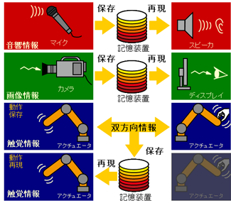

概 要
 音声情報や画像情報の保存及び再現についての技術は広く研究開発が行われていますが， 触覚・力覚情報についての保存や再現に関する技術は未だ確立されておりません。 右の図に示すように，視聴覚情報についてはマイクやカメラによって保存され，スピーカやディスプレイを用いて再生することができます。 しかしながら人間には五感があり，この五感を駆使して認識しています。 ところが現在実用化されている技術では，目と耳の情報しか扱いきれておらず，残りの三つの感覚器の情報は考慮されていません。
そこで本研究では触覚・力覚情報に焦点を当て，触覚・力覚情報の保存と再現を実現するモーションコピーシステムを提案しました。 モーションコピーシステムはアクチュエータを用いて，動作の保存と再現を実現します。
実験装置
以下にモーションコピーシステムの実験装置を示します。


モーション保存システム(左)とモーション再現システム(右)の実験装置
モーションコピーシステムは，モーション保存システムとモーション再現システムで構成されます。 モーション保存システムは操作者の動作を保存し，モーション再現システムは保存された動作データを基に， 操作者の位置と力の双方を再現することができます。 すなわち時間と空間を越えて操作者の動作(触覚・力覚)を再現することが可能となります。
実 験
以下に実験の様子を撮影した動画を示します。

MCS-Keio.wmv (WMV形式 15.4MB)
既存技術との相違
人間の動作を抽出する手法としてモーションキャプチャがありますが，モーションキャプチャでは位置情報しか取得できません。 一方のモーションコピーシステムは位置情報に加え力情報の取得も可能であり，また抽出された位置と力をそのまま再現することができます。
さらに，提案手法は対象環境のモデルを一切用いないため，実用的な技術です。
応 用
このモーションコピー技術を用いることで，熟練技術者や手術の術者の動作を保存しロボットに技術の継承をさせることができるようになるでしょう。
研究室の横の倉庫 - Side Warehouse of Laboratory
Copyright(C), Side Warehouse, All rights reserved.